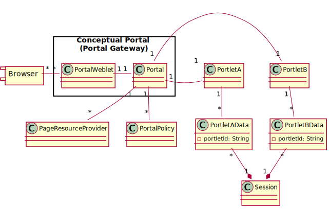
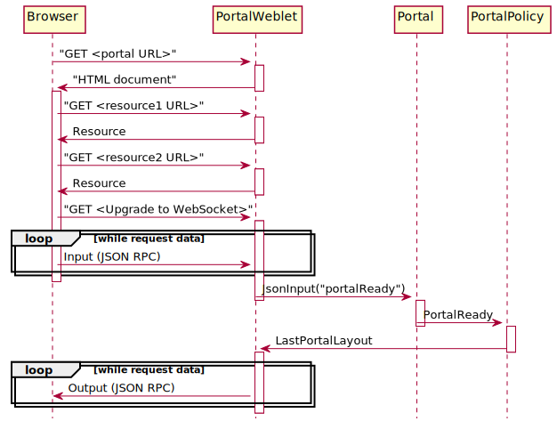
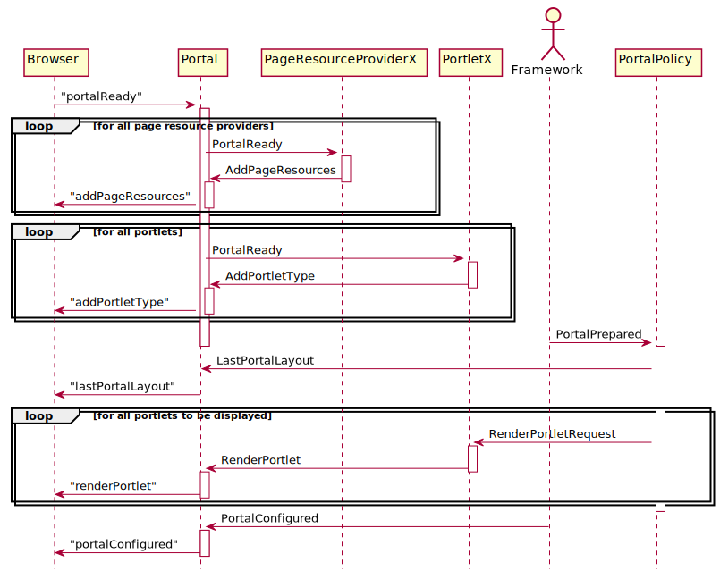

@Version(value="${api_version}")
See: Description
| Interface | Description |
|---|---|
| PageResourceProviderFactory |
A factory interface for
PageResourceProvider components. |
| Portal.PortalMXBean |
The MBeans view of a portal.
|
| Portal.PortalSummaryMXBean |
An MBean interface for getting information about all portals.
|
| Portlet |
This interface provides portlet related constants.
|
| PortletComponentFactory |
A factory interface for portlet components.
|
| RenderSupport |
Provides support for creating URIs in the portal scope that
are forwarded to components listening on the portal channel.
|
| ResourceByGenerator.Generator |
The interface that must be implemented by the content provider.
|
| UserPrincipal |
A principal representing an identity established by a client.
|
| Class | Description |
|---|---|
| AbstractPortlet |
Provides a base class for implementing portlet components.
|
| AbstractPortlet.PortletBaseModel |
Defines the portlet model following the JavaBean conventions.
|
| KVStoreBasedPortalPolicy |
A component that restores the portal layout,
using key/value events for persisting the data between sessions.
|
| PageResourceProvider |
Base class for implementing components that add resources to
the
<HEAD> section of the portal page. |
| Portal |
Provides the portlet related part of the portal.
|
| Portal.PortalInfo | |
| Portal.PortalMXBean.PortalSessionInfo | |
| PortalLocalBackedKVStore | |
| PortalSession |
The server side representation of a window in the browser
that displays a portal page (a portal session).
|
| PortalWeblet | |
| PortalWeblet.LanguageInfo |
Holds the information about the selected language.
|
| PortalWeblet.ThemeInfo |
Holds the information about a theme.
|
| ResourceByGenerator |
Returns a
Runnable that writes to an OutputStream as result. |
| ResourceByInputStream |
Returns an
OutputStream as result. |
| ResourceByUrl |
Returns a
URL as result. |
| ResourceNotModified |
Indicates that a resource provider found the resource to be
unmodified.
|
| ResourceProvided |
Indicates that a resource provider has fully processed the
resource request a provided a response.
|
| ResourceResult |
The base class for all results from processing a resource
request.
|
| ThemeProvider |
Represents a theme provider.
|
| Utils |
| Enum | Description |
|---|---|
| Portlet.RenderMode |
The render modes.
|
| Exception | Description |
|---|---|
| ResourceNotFoundException |
Thrown if a resource cannot be found.
|
Provides the components for building a portal based on the core, io and http packages.
The Portal component
is conceptually the main component of the portal. It exchanges events
with the portlets and helper components, using a channel that is
independent of the channel used for the communication with the browser.
When created, a Portal component automatically
instantiates a child component of type
PortalWeblet which handles the
communication with the HttpServer and thus
with the browser. You can think of the
PortalWeblet/Portal
pair as a gateway that translates the Input/Output related events on the
HTTP/WebSocket side to portal/portlet related events on the portlet side and
vice versa.

In the browser, the portal is implemented as a single page
application. The PortalWeblet provides
an initial HTML document that implements the basic structure of
the portal. Aside from additional HTTP requests for static resources
like JavaScript libraries, CSS, images etc. all information is
then exchanged using JSON messages exchanged over a web socket
connection that is established immediately after the initial
HTML has been loaded.
The initial HTML document already includes some JavaScript resources
like jQuery and jQuery-UI.
The portlets may, however, require additional libraries in order to
work. While it is possible for the portlets to add libraries, it is
usually preferable to add such libraries independent from individual
portlets in order to avoid duplicate loading and version conflicts.
This is done by PageResourceProviders
that fire the required events on portal startup (see below).
Portlet components represent available portlet types. If a
portlet is actually used (instantiated) in the portal, and state
is associated with this instance or instances have to be tracked,
the portlet has to create and maintain a server side representation
of the instance. How this is done is completely up to the portlet.
A common approach, which is supported by the portlet base class
AbstractPortlet, is shown in the
diagram above.
Using this approach, the portlet creates a portlet data object for each instance as an item stored in the browser session. This couples the lifetime of the portlet data instances with the lifetime of the general session data, which is what you’d usually expect. Note that the portal data object is conceptually a view of some model maintained elsewhere. If the state information associated with this view (e.g. columns displayed or hidden in a table representation) needs to be persisted across sessions, it’s up to the portlet to do this, using a persistence mechanism of its choice.
The functionality that must be provided by a portlet with respect to its display on the portal page will be discussed later, after all components and their interactions have been introduced.
Portal policy components are responsible for establishing the initial
set of portlets shown after the portal page has loaded. Usually,
there will be a portal policy component that restores the layout from the
previous session. KVStoreBasedPortalPolicy
is an example of such a component.
There can be more than one portal policy component. A common use case is to have one policy component that maintains the portal layout and another component that ensures that the portal is not empty when a new session is initially created. The demo includes such a component.
The following diagram shows the start of a portal session up to the exchange of the first messages on the web socket connection.

After the portal page has loaded and the web socket connection has been
established, all information is exchanged using
JSON RPC notifications.
The PortalWeblet processes
Input events with serialized JSON RPC
data from the web socket channel until the complete JSON RPC notification
has been received. The notification
(a JsonInput from the servers point
of view) is then fired on the associated
PortalSession channel, which allows it to
be intercepted by additional components. Usually, however, it is
handled by the Portal that converts it
to a higher level event that is again fired on the
PortalSession channel.
Components such as portlets or portal policies respond by sending
PortalCommands on the
PortalSession channel as responses.
The PortalCommands are handled
by the PortalWeblet which serializes
the data and sends it to the websocket using
Output events.
The diagram below shows the complete mandatory sequence of events
following the portal ready message. The diagram uses a
simplified version of the sequence diagram that combines the
PortalWeblet and the
Portal into a single object and leaves out the
details about the JSON serialization/deserialization.

The remaining part of this section provides an overview of the preparation and configuration sequence. Detailed information about the purpose and handling of the different events can be found in their respective JavaDoc or in the documentation of the components that handle them. Note that the these detailed descriptions use the simplified version of the sequence diagram as well.
The preparation sequence starts with
AddPageResources events fired
by the PageResourceProvider components
in response to the PortalReady event.
These cause the portal page to load additional, global resources.
In parallel (also in response to the
PortalReady event), each portlet
component fires an AddPortletType event.
This cause the portal page in the browser to register the portlet type
in the portal’s menu of instantiable portlets and to load any additionally
required resources.
When all previously mentioned events have
been processed, the portal is considered prepared for usage and a
PortalPrepared event is generated
(by the framework as CompletionEvent of the
PortalReady event). This causes
the portal policy to send the last known layout to the portal page
in the browser and to send
RenderPortletRequest events
for all portlets (portlet instances) in that last known layout.
These are the same events as those sent by the browser
when the user adds a new portlet instance to the portal page.
The portal policy thus “replays” the creation of the portlets.
As completion event of the PortalPrepared
event, the framework generates a
PortalConfigured event which is sent to
the portal, indicating that it is now ready for use.
After the portal session has been configured, the system usually
waits for input from the user. Changes of the layout of the
portal page result in events such as
AddPortletRequest,
DeletePortletRequest and
RenderPortletRequest.
Actions on portlets trigger JSON messages that result in
NotifyPortletModel events
that are processed by the respective portlet component. If,
due to the results of the action, the representation of the
portlet on the portal page must be updated, the portlet
component fires a
NotifyPortletView event.
NotifyPortletView events
can also be sent unsolicitedly by portlet components if
the model data changes independent of user actions.
Portlets are components that consume and produce events. They
don’t have to implement a specific interface. Rather they have
exhibit a specific behaviour that can be derived from the
descritions above. The documentation of the base class
AbstractPortlet summarizes
the responsibilities of a portal component.